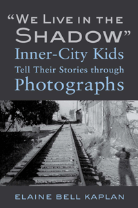

<body bgcolor="#FFFFFF" text="#000000" link="#0000FF" vlink="#CC0000" alink="#CC0000"><center><hr width="350" size="1" align="center" noshade>The inner-city world of young at-risk teens through their powerful photos and stories<hr width="350" size="1" align="center" noshade><p><a href="https://cdcshoppingcart.uchicago.edu/Cart/ChicagoBook.aspx?ISBN=9781439907894&&PRESS=temple" target="_top">Buy this book!</a> | <a href="https://cdcshoppingcart.uchicago.edu/Cart/Cart.aspx?PRESS=temple" target="_top">View Cart</a> | <a href="https://cdcshoppingcart.uchicago.edu/Cart/Cart.aspx?PRESS=temple" target="_top">Check Out</a></p><p></p></center><!--none//--><h1>"We Live in the Shadow"</h1>
<H2>Inner-City Kids Tell Their Stories through Photographs</H2>
<h3>Elaine Bell Kaplan</h3>
<P>cloth 1-4399-0789-7 $80.50, May 13, <FONT COLOR=#990033>Available</FONT>
<br>paper 1-4399-0790-0 $26.95, Jun 13, <FONT COLOR=#990033>Available</FONT>
<br>Electronic Book 1-4399-0791-9 $25.95 <FONT COLOR=#990033>Available</FONT>
<BR> 208 pp
6x9
3&nbsp;tables 53&nbsp;halftones
</P><BLOCKQUOTE><I>"Kaplan gives a group of preteens from South Central L.A. the chance to document their lives in this moving work. After telling them to 'take pictures of anything you want to show me about your experiences,' Kaplan uses the results to assemble a well-researched narrative examining how the subjects 'experience and react to the social problems associated with South Central,' their reflections on living there, and how they deal with daily challenges, including gang violence and drug warfare.... [Kaplan] interweaves her subjects’ stories and pieces from their photo essays with her research, reflections, and observations, confronting issues of class, race, and identity. Even casual anecdotes point to larger problems—teachers who don’t care and schools that don’t work."</i><br>&#151<b><i> Publishers Weekly</i></b></I></BLOCKQUOTE>
<P>Looking at their photo of railroad tracks, a group of preteen students in South Central Los Angeles see either "a way out of the ghetto," or a "dirty, bad environment." Such are the impressions expressed in the poignant <I>"We Live in the Shadow": Inner-City Kids Tell Their Stories through Photographs</I>.
<P>In Elaine Bell Kaplan's perceptive book, at-risk youth were given five-dollar cameras to tell stories about their world. Their photos and stories show us their response to negative inner-city teen images. We follow them into their schools, and we hear about their creative coping strategies. While these kids see South Central as dangerous, they also see themselves as confident enough to not let the inner-city take them down. They refuse to be labeled as "ghetto thugs," as outsiders sometimes do. These outsiders include police, teachers, and other groups representing the institutional voices governing their daily lives.
<P>The kids in <I>"We Live in the Shadow": Inner-City Kids Tell Their Stories through Photographs</I> have developed a multilayered view of society. This impressive book gives voice to their resilience.
<BR>&nbsp;<h2>Excerpt</h2><P>Excerpt available at <a href="http://www.temple.edu/tempress">www.temple.edu/tempress</a></p>
<BR>&nbsp;<h2>Reviews</h2>
<p><I>"</I>"We Live in the Shadow'<I>, is a very absorbing combination of photo and text that will draw readers into the lives of these youth and facilitate some very difficult dialogues on race and privilege. The unique use of photovoice methodology—which allows the participants to provide something more than an interview response—provides a more comprehensive understanding of these youths. The pictures themselves would comprise a masterful photo-essay if presented alone. But the combination of compelling photos and rich, nuanced interview data provides an extremely important and novel representation of the lives of these teens."</I><br>&#151<b>Cynthia Hudley</b>, Professor in the Graduate School of Education at the University of California, Santa Barbara, and author of <i>You Did that on Purpose: Understanding and Changing Children’s Aggression</i>
<p><I>"Any work that aims to fight against simplistic and extraordinarily narrow depictions of African American and Latino youth in urban America is important. In </I>‘We Live in the Shadow’<I> Elaine Bell Kaplan aims to capture a more complex and complicated vision of such young people as skilled interpreters of their social realities. The novelty of the photovoice approach will appeal to a broad audience, and this book will be a stand-alone contribution to studies of racialized youth in urban poverty."</I><br>&#151<b>Alford A. Young, Jr.</b>, Arthur F. Thurnau Professor, Sociology, and Department of Afroamerican and African Studies, University of Michigan
<p><i>"While many books are available of poor kids’ photographs of their environments, few are as successful as this at respectfully rendering kids’ commentaries on their photos, and linking this to sociological theory. Hence, this book makes a substantial contribution to our understanding of the lived experiences of young adolescents growing up poor, as well as visual sociology.... The treasure[s] of this book are the many insightful comments that young people provide for photos that otherwise are difficult to decipher.... A highlight of the book is the students’ keen sense of irony in explaining their photos: Spencer notes how a building where drug dealers meet sports a 'Welcome' sign. Some of the kids’ most poignant stories are found in the final section."</i> <br>&#151;<b><i>Teachers College Record</i></b>
<p><i>"Sociologist Kaplan uses a photovoice methodology to tell the experiences of at-risk youth in South Central Los Angeles in this thought-provoking narrative of youth voices combined with research. The black-and-white photos tell the story of courage, resilience, and hope amid poverty, crime, community violence, and social disorganization. The author incorporates her research about South Central into the narrative and offers readers an understanding of South Central's history and its impact on the lives of its youth. The photos and writings of the youth and Kaplan confront race, class, and identity. This visionary photovoice approach is a must-read for youth counselors and other professionals looking to engage youth in society and decrease the likelihood of delinquent behaviors. Summing Up: Highly recommended."</i> <br>&#151;<b><i> Choice</i></b>
<p><i>"Adopting a photovoice methodology, Elaine Bell Kaplan provides an engaging account documenting why a group of disadvantaged Latino and Black kids want to succeed academically, and transcend their 'ghetto' backgrounds....The main strength of the book is that it offers many insights into how socially excluded youth are keenly aware of the structures that govern their lives.... [A] rich and insightful piece of work."</i><br>&#151;<b><i>Criminal Law and Criminal Justice Books</i></b>
<p><i>"Kaplan demonstrates the value that can come from directly engaging in dialogue with youth about their lives. Through photographs and interviews, middle and high school students living in South Central Los Angeles provide an important and often overlooked insight relevant to a wide range of professionals: these youth see and articulate the neglect and disparaging attitudes that pervade the 'ghetto' environment that also happens to be their home.... Kaplan offers new insights into social theories of inner city youth in that youth have more sophisticated understandings of their circumstances than previous research articulates. Kaplan helps shed light on ways that youth themselves look to larger social and structural causes for their life circumstances.... Her work more clearly defines the inner-city experience of youth who want something different."</i> <br>&#151;<b><i>Children, Youth and Environments</i></b>
<p><i>"</i>We Live in the Shadow<i> has an admirable purpose: telling the stories of hyper-ghettoized South Central Los Angeles through the words and images of adolescents who have been given cameras, instructed to photograph on specific themes, and then are interviewed about their photos.... Kaplan has an impassioned and vivid sense of the injustice that forms the context for her study. Some of the most useful parts of this book are chapters on the racialized history of South Central L.A. and the complex and changing relationships of several minority groups (African American, Mexican, Central American) to each other."</i><br>&#151;<b><i>Contemporary Sociology</i></b>
<BR>&nbsp;<P><p>View a <a href="http://www.temple.edu/tempress/chapters_1800/2179_photos.pdf"target="new">selection of images</a> from the book (pdf).</p></P><BR>&nbsp;<br>
<h2>Contents</h2><P>
<p>Acknowledgments</p>
<p><b>Part I: Kids with Cameras</b>
<br>1. “What Do You Want to Tell Me about This Picture?”
<br>2. The Photovoice Methodology</p>
<p><b>Part II: History and Transformation of South Central</b>
<br>3. “Don’t Be a Menace to South Central while Drinking Your Juice in the Hood”
<br>4. “Send Them All to Iraq”</p>
<p><b>Part III: Kids’ School Stories</b>
<br>5. Teachers and Dirty Bathrooms
<br>6. “She’s Gettin’ Her Learn On”</p>
<p><b>Part IV: Kids’ Neighborhood Stories</b>
<br>7. “I Was Just Scared”
<br>8. Garbage, Alleyways, and Painted Doors</p>
<p><b>Part V: Kids’ Family Stories</b>
<br>9. Strain of a Heart
<br>10. To Hope for Something</p>
<p>Appendix A: Participants by Race/Ethnicity, Gender, and Age
<br>Appendix B: University of Southern California Neighborhood Academic Initiative Program Graduate Survey, 1997–2011
<br>Appendix C: Assignments and Questionnaire</p>
<p>Notes
<br>Index</p>
</P><BR>&nbsp;<H2>About the Author(s)</H2>
<P><b>Elaine Bell Kaplan</b> is Associate Professor in the Department of Sociology at the University of Southern California, and author of <I>Not Our Kind of Girl: Unraveling the Myths of Black Teenage Motherhood</I>.</P>
<BR><H2>Subject Categories</H2>
<p><A HREF="/tempress/sociology.html" TARGET="_top">Sociology</a>
<BR><A HREF="/tempress/education.html" TARGET="_top">Education</a>
<BR><A HREF="/tempress/race.html" TARGET="_top">Race and Ethnicity</a>
</p>
<p align="center"><a href="https://cdcshoppingcart.uchicago.edu/Cart/ChicagoBook.aspx?ISBN=9781439907894&&PRESS=temple" target="_top">Buy this book!</a> | <a href="https://cdcshoppingcart.uchicago.edu/Cart/Cart.aspx?PRESS=temple" target="_top">View Cart</a> | <a href="https://cdcshoppingcart.uchicago.edu/Cart/Cart.aspx?PRESS=temple" target="_top">Check Out</a></p><p><font face="Arial" size="1"><a href="copyright.html" onMouseOver="window.status='Web Copyright Policy';return true;" onMouseOut="window.status=''" title="Web Copyright Policy">&copy;</a> 2016 <a href="http://www.temple.edu" target="new" onMouseOver="window.status='Link to Temple University home page';return true;" onMouseOut="window.status=''" title="Link to Temple University home page">Temple University</a>. All Rights Reserved. http://www.temple.edu/tempress/titles/2179_reg.html</font></p>